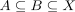
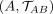
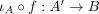
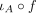
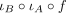
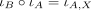

associativity of subspace topology
1. Proposition
Let  be a topological space and
be a topological space and

subsets. Let
be the subspace of the subspace topology of
of the subspace topology of  and the subspace of of
and the subspace of of  Then
Then
2. Proof
Nach Charakterisierung der Unterraumtopologie als Initialtopologie für die Inklusionsabbildung sei:
So ist eine Abbildung stetig g.d.w.

stetig ist und
ist stetig, g.d.w.
stetig ist. Da
gilt, ist somit auch , da die Initialtopologie eindeutig bis auf isomorphie ist.